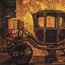

Galeria de fotos
As salas expositivas fotografadas durante a montagem da temporada.
Salas expositivas



Sobre as imagens
As fotografias foram feitas pela equipe de documentação do museu durante a montagem das salas, antes da abertura ao público. Registros em alta resolução podem ser solicitados para fins didáticos ou de pesquisa pela página de contato, com indicação do uso pretendido.
A reprodução é liberada para uso educacional, desde que citada a fonte. Para uso comercial ou editorial é necessária autorização prévia do setor de documentação.
Fotografar durante a visita
- Fotografia sem flash é permitida em todas as salas
- Tripés e equipamentos de iluminação exigem autorização prévia
- A Sala 3 não permite fotografia, por restrição acordada com as comunidades de origem das peças
- Ensaios e filmagens profissionais são agendados fora do horário de visitação
Quer ver as salas em movimento? A página de vídeos reúne os registros audiovisuais do museu.